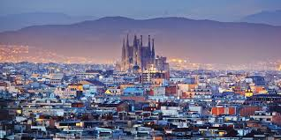
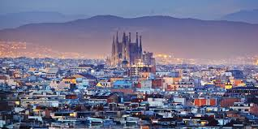

Prvi tragovi čoveka na teritoriji na kojoj se danas nalazi Barselona datiraju od pre 4000 godina, krajem neolita (2000—1500. p. n. e.). Postoje zapisi iz 7. u 6. veka p. n. e. u kojima se pominje naselje Barkeno iberskog naroda Lajetanaca. Izgleda da je u to doba takođe postojala i jedna grčka kolonija po imenu Kalipolis, iako istoričari još uvek ne mogu da se slože o tačnom položaju ove kolonije. Tokom Drugog punskog rata naseljavali su je jedno vreme Kartaginjani, da bi ga kasnije preuzeli Rimljani[2]. Rimljani su pretvorili grad u vojnu tvrđavu — kastrum — čiji je centar bio malo uzvišenje pod nazivom Taber (danas deo Barselone koji se zove Sijutat Velja (kat. Ciutat Vella) što znači Stari grad). Rimljani su gradu promenili ime u Kolonija Julija Avgusta Faventija Paterna Barsino, koji se nalazio upravo na mestu gde se sad nalazi Trg svetog Đaumea. Ostaci rimskih zidina još uvek se mogu videti u starom gradu. Neke rimske zidine su poslužile kao temelji za Katedralu[3], za koju se kaže da je započeta još davne 343. godine. Godine 415, grad su osvojili Vizigoti pod vođstvom Ataulfa[2], pretvorivši ga u prestonicu hispanske Vizigotske kraljevine, mada su je ubrzo premestili u Toledo. Mavri su osvojili grad između 717. i 718. godine, tokom mavarske invazije Iberijskog poluostrva ali se nisu dugo zadržali, pošto je 801. grad osvojio Luj I Pobožni tokom vlasti Karla Velikog.[1] Barselona je tada bila pretvorena u veliko utvrđenje u okviru Hispanske marke u okvuru Gotije (koja je podrazumevala teritorije Langdoka — Septimanije — to jest, stara vizigotska Galija i sever Katalonije do ušća reke Ljobregat), i postavljeni su grofovi da vladaju njome[2]. Prvi grof Barselone i osnivač Barselonske dinastije bio je Vilfred I Dlakavi (kat. Guifré I el Pelós), koji je na Saboru u Troju 878. godine bio proglašen grofom od Barselone, Đirone i Besalua. Grofovija je bila franački vazal. Godine 985. Mavri su napali i uništili Barselonu. Kako Franačka država nije pružila pomoć svom vazalu, godine 988. grof Borelj II se proglasio iberskim vojvodom i markizom po božjoj milosti, što je značilo raskidanje vazalskog odnosa sa Francima i uspostavljanje nezavisnosti[2]. Barselona se brzo oporavila od muslimanskog uništenja i 1010. je uzvratila udarac napadom na Kordobu, najveći muslimanski grad na tlu Iberijskog poluostrva, i opljačkala ga odnevši pozamašan plen. U sledećim vekovima, razne katalonske grofovije su se ujedinjavale pod vrhovnom vlašću grofova od Barselone, putem bračnih i rodbinskih veza. Ta ujedinjenja su uključivala veliki deo današnje južne Francuske. Istovremeno su se teritorije Barselone proširile na račun muslimanske teritorije. Od tog momenta, gotovo je nemoguće razdvojiti istoriju Barselone od istorije Katalonije. Godine 1137, grof Barselone, Ramon Berenger IV se oženio kćerkom kralja Aragona, čime se Kraljevina Aragon i Grofovija Barselona ujedinjuju pod zajedničku krunu Aragona, čiji će vladari od tada imati titulu kralja Aragona i grofa od Barselone. U daljoj istoriji, u sastav Krune Aragona su se dalje priključile razne kraljevine do njenog konačnog ujedinjenja sa Krunom Kastilje koje je postignuto sklapanjem braka između Ferdinanda od Aragona i Izabele od Kastilje 1479. godine.
 
